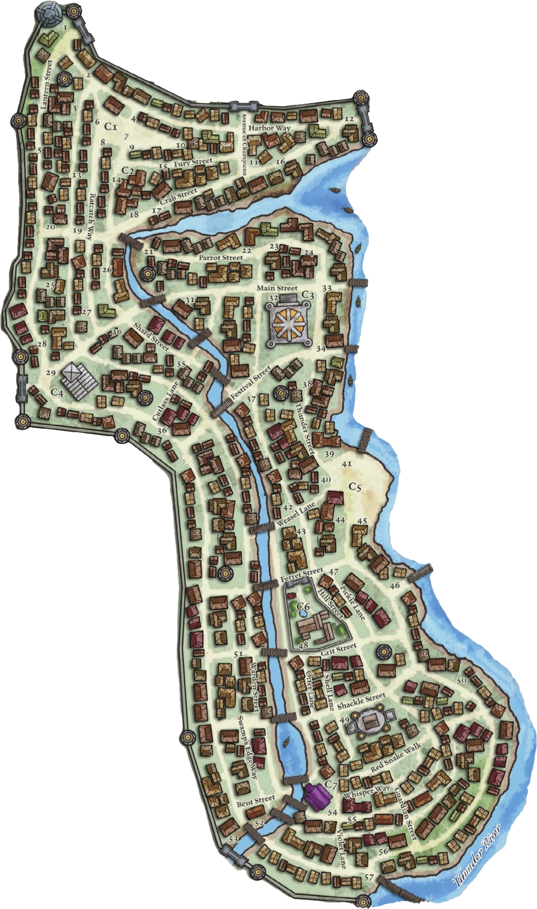

Sasserine
Quartier Cudgel
Présentation du quartier
Phare de Cudgel
Un repère visible et symbolique du quartier.
Guilde des Charpentiers
Une guilde importante dans un quartier de bâtisseurs, d’artisans et de travailleurs vigilants.
Les Curiosités d'Enad
Une boutique de curiosités où l’on trouve parfois bien plus que de simples bibelots.
Temple de la Fureur Tourbillonnante
Un temple mystérieux, entouré de rumeurs et de portes closes.
La Veine d'Argent
Une taverne du Quartier Cudgel.